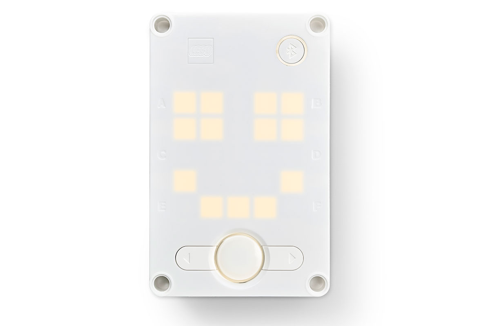
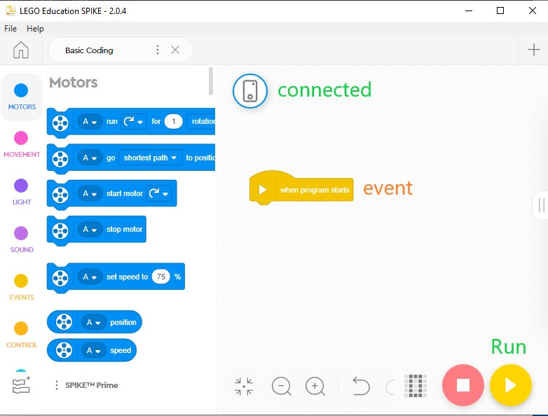
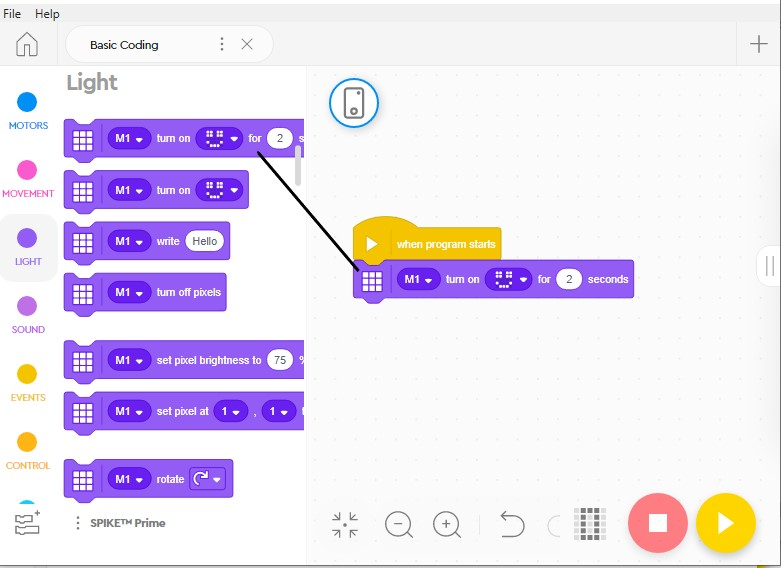
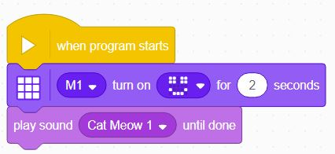
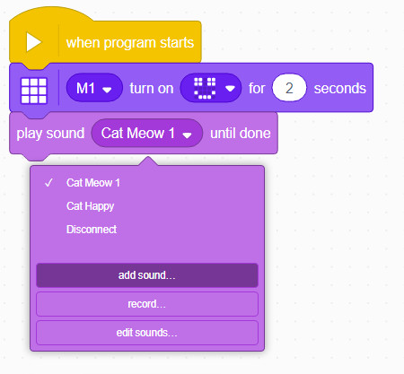
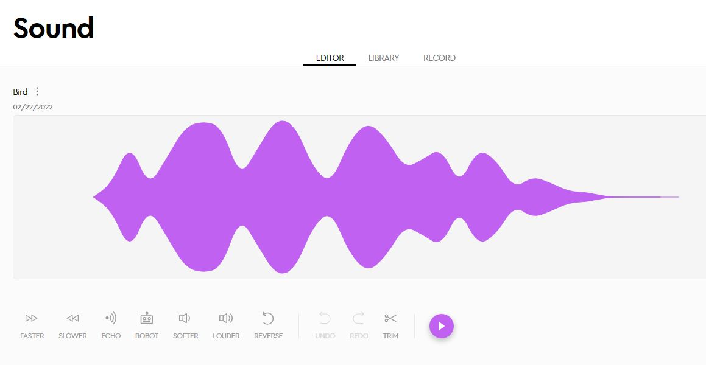

Sequences
Statements
The fundamental unit of a code is an execution statement.
Do this.
Do that.
When we program a bunch of these statements one after the other, the hub will execute them in the same order.
This is called a sequence, meaning one statement follows another.
Sequences
Let's try some simple code sequences.
First, make the Hub display smile.

Events
When you start a new project, you will see an initial event block when program starts. Any statements attaced to this event will be executed each time the program is initiated.

All event blocks can be found under the Events blocks tab.
More on Events later...
Light
Let's add a statement to make the Hub show a smile face on its LED display.
The LED display is controlled by coding blocks under the Light blocks tab.
To add a statement to the when program starts event, you need to find the block you want and drag it over the code area with that event block.
Let's drag the Matrix [] turn on [] for [] seconds block - the first one in the Light tab - under the when program starts event block.

This will make the smiley face show up for 2 seconds.
Click Play button to execute.
You can use the 5X5 matrix to turn on and off various LEDs to draw different images.
Sound
Let's add another block to make a sound as well.

The default sound is a cat meow... We don't know why!
You can "Add Sound" to choose from many other library sounds available.

You can also record and edit sound waves inside the Spike App.

Don't forget to test your changes by clicking Run to execute your program on the Hub.
Test/Explore
Feel free to explore a bit.
Add different Light and Sound effects to make a sequence of statements, and test it by running the program on the hub.
Next we will look at how to repeat statement patterns using Loops.